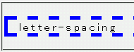

letter-spacingプロパティで何らかの値を指定したボックスで、border-widthプロパティの指定値が無視されてしまうことがある。
<p style="letter-spacing:0.2em; border-width:5px; border-style:dashed; border-color:blue;">letter-spacing</p>
letter-spacing
p要素は文字間隔を0.2emにし、さらに幅10pxの破線ボーダーを設置しています。
Moz1.0.2での表示（標準モード）
bodyに letter-spacing : 0.2em を適用してみました。
するとbox内のテキストの表示が、所々はみ出してしまいます。
はみ出すブラウザはMacIE5です。
WinIE6は大丈夫でした。NN7.02も大丈夫です。
これを回避するのにbodyではなく直接boxのスタイルに
letter-spacing : 0.2emを適用しました。
するとNN7.02ではboxの border-width が無効になってしまいます。